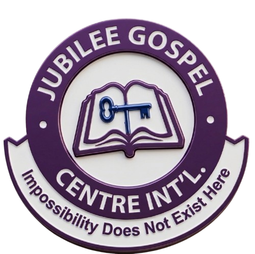
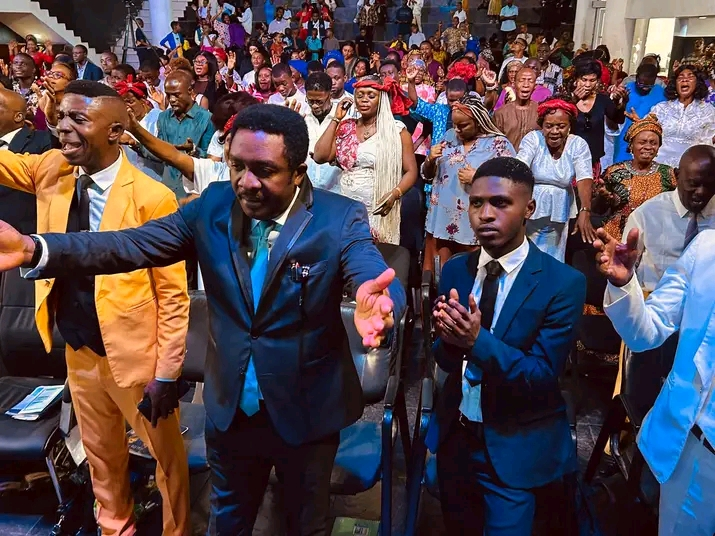
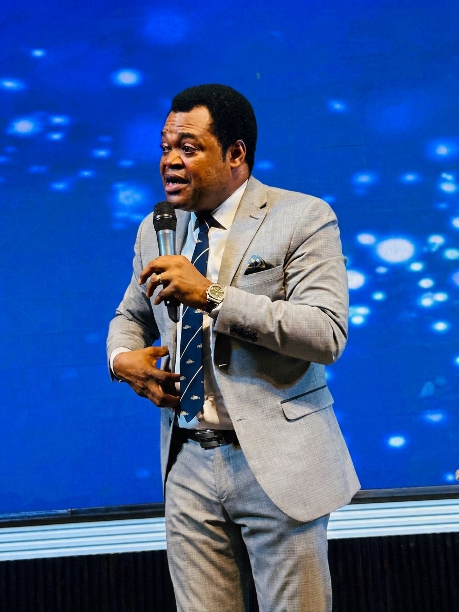

City of Increase
...influencing the world with the word.
A place where faith is strengthened, destinies are shaped,
and lives are transformed through the undiluted Word of God.
A place where impossibility does not exist.
Jubilee Gospel Centre International, also known as City of Increase, is a Christ-centred ministry committed to influencing the world through the Word of God, nurturing faith, and helping people discover and fulfil their God-given purpose.
Learn More
There is always an opportunity to grow, connect, and experience God's presence in his house.
7:00 AM
8:00 AM
8:00 AM
8:00 AM
Pst. Daniel is a visionary man of God with a mission to impact lives, raise great individuals, and spread the gospel across the globe, all in divine excellence.
"Life is a fight."

Come worship with us and become part of God's big family.